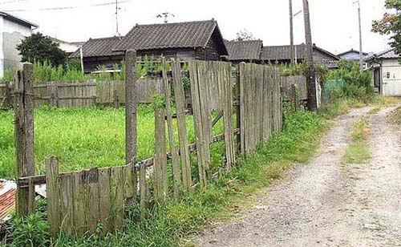
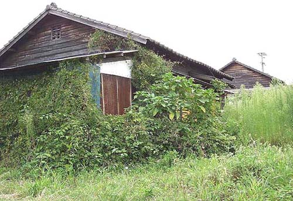
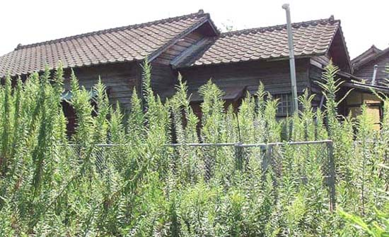
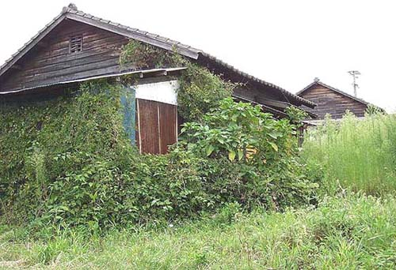
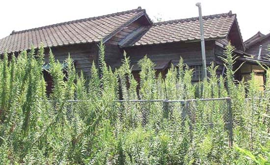
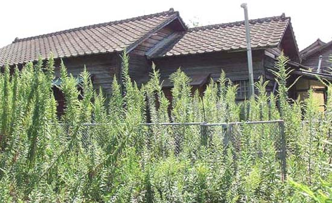

福岡県大牟田市による昭和35年10月1日現在「町別世帯数人口および戸数一覧」によれば、
しかし、平成16年10月1日現在にあっては、
（2003年9月25日撮影）  （2003年9月25日撮影）  （2003年9月25日撮影）  （2003年9月25日撮影）
（2003年9月25日撮影）  （2003年9月25日撮影）  （2003年9月25日撮影）
（2003年9月25日撮影）  （2003年9月25日撮影）
（2003年9月25日撮影）